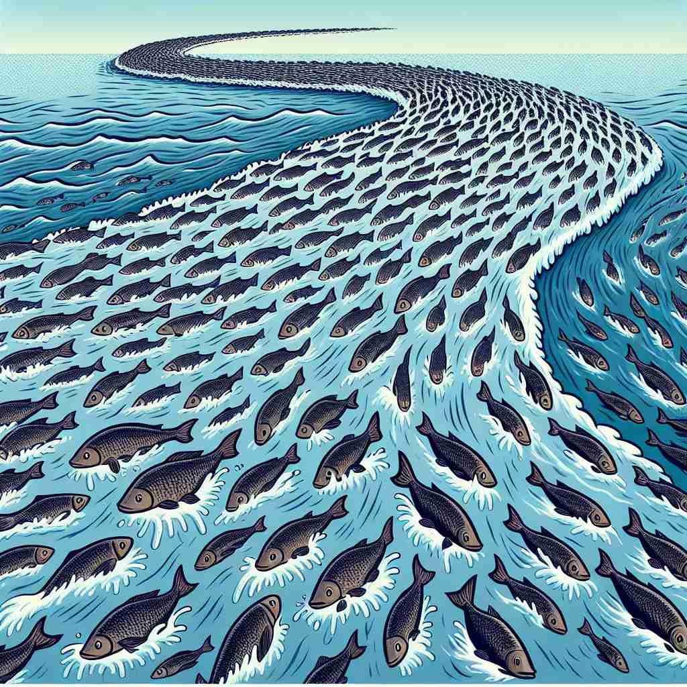

💬 In the city, people enjoy activities that reflect mainstream culture. 在城市中，人们喜欢参与反映主流文化的活动。
💬 The people on the street are following the mainstream culture. 街上的人们正在追随主流文化。

💬 The fish seem to go with the mainstream of the river's current. 鱼似乎顺着河流的潮流游动。

💬 The crowd is wearing mainstream fashion styles in the city. 人群身着城市中的主流时尚风格。
🧠 想象一条大河的主流（main stream），它代表了最强、最广的水流。这就像社会中被大多数人接受的主要思想和行为。无论是思想、趋势、媒体还是产品，都可以有"主流"的概念。通过这个水流的比喻，你可以更容易理解和记住'mainstream'在不同语境中的用法。
🔈 ['meɪnstriːm]
🗝️ n./adj. the ideas, attitudes, or activities that are shared by most people and regarded as normal or conventional 大多数人共同拥有并被视为正常或传统的观念、态度或活动
🎭 在一个大型音乐节的现场，观众们挥舞着随音乐律动的荧光棒。舞台上的乐队正在演奏一支流行曲目，所有人在欢呼并跟着旋律一起唱跳。这种流行文化所反映的正是'mainstream'的含义：一种大多数人共享并视为常规的想法和行为。
💬 These views are now part of the political mainstream. 这些观点现在已成为政治主流的一部分。
🌳 由词根 'main'（主要的）和 'stream'（流）组合而成，表示主要潮流或主流。
🕸️ 1. mainstream: 主流 2. mainstreaming: 使纳入主流 3. mainstreamed: 被纳入主流的
💡 记忆 'mainstream' 时，可以联想为 '主要的流'，意味着大众所接受的普遍趋势或意见。想象一个大河流，代表着主流文化或思想，这样可以加深记忆。